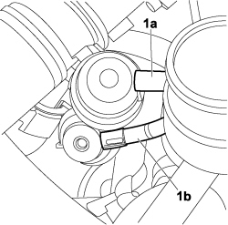
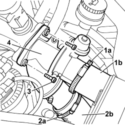

1060G50 THROTTLE BODY - R.R
- Path
- Procedures > 10 ENGINE > 1060 DIESEL INJECTION SYSTEM > 1060G DIESEL INJECTION PRESSURE PUMP ELECTRONIC CONTROL > 1060G50 THROTTLE BODY - R.R
- Kind
- repair procedure (removal / refitting; the operation number is the code)
- Applies to
- engines: 2.0 16V JTD, 2.2 16V JTD; all production periods
- Interactive page
- https://sloeber94.github.io/elrnDB-fUlss/en/#/179007058
Applies to: engines: 2.0 16V JTD, 2.2 16V JTD; all production periods
 Removing
Removing
 Refitting
Refitting- Loosen the collars and disconnect the air delivery pipe from the intercooler.
1. Disconnect the vacuum pipes (1a) and (1b) from the pneumatic valves.

Applies to: engines: 2.0 16V JTD, 2.2 16V JTD; all production periods
1. Loosen the band (1a) and remove the air delivery pipe (1b).
2. Loosen the band (2a) and remove the air delivery sleeve (2b).
3. Undo the bolts fixing the throttle body to the intake manifold.
4. Remove the throttle body.

Applies to: engines: 2.0 16V JTD, 2.2 16V JTD; all production periods
Refitting
Removing- Place the throttle body in position and tighten the fixing bolts.
- Connect the vacuum pipes to the pneumatic valves.
- Fit the air delivery hoses on the throttle body and tighten the fastening bands.
- Connect the air outlet hose to the intercooler and secure with the band.